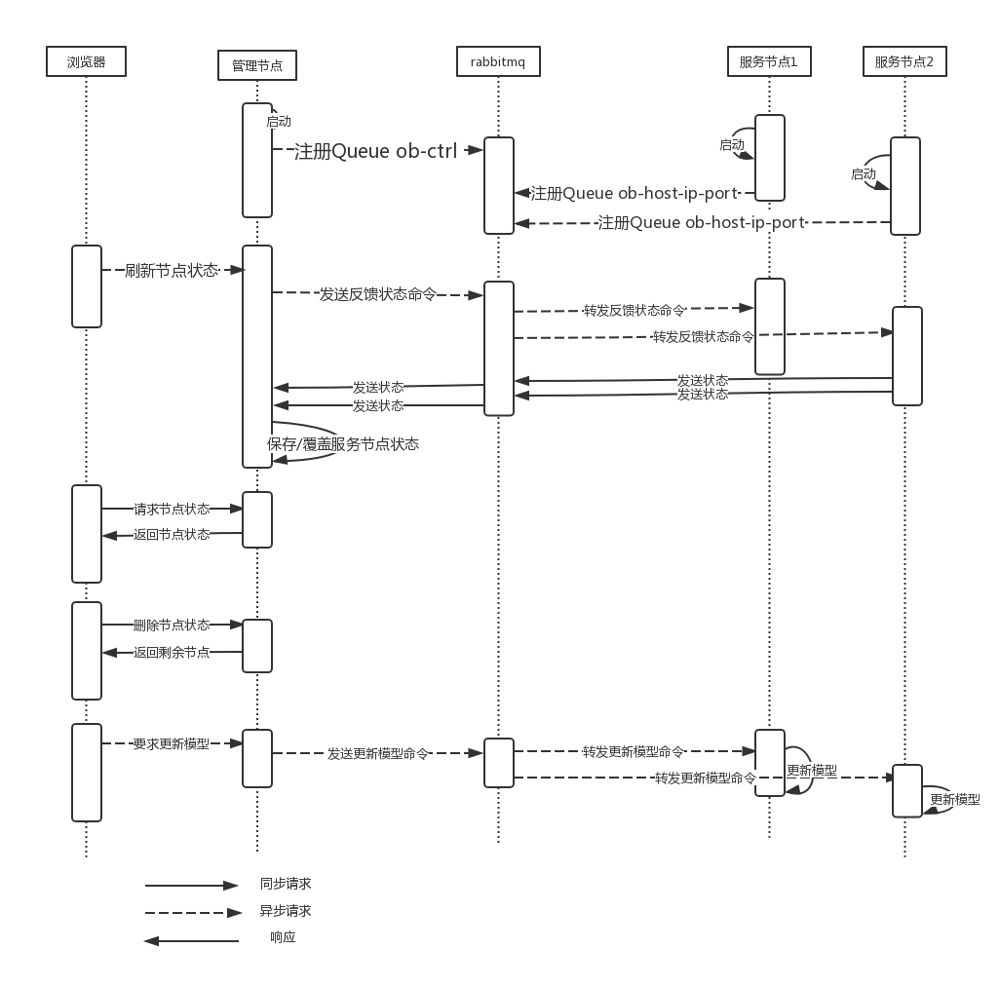

管理后台说明书
关于服务治理，由很多现成的实现，但却难以满足当前项目的需求。此项目较为特殊的地方在于，所使用的tensorflow模型 是一个很重要的状态信息，并且更新模型设计到新模型加载和旧模型close的问题，不能简单的通过配置中心的方式解决，这是产生该平台的原因。此平台的职责是tensorflow服务实例进行管理。通过这个“集中式”的管理平台，运维人员可以便捷地了解各个服务实例的状态。另外，另外用户可以通过此平台进行tensorlfow模型的发布，并动态更新已存在服务实例所使用的模型。
监测功能说明
当服务节点启动/崩溃重启时，会向管理平台（重新）注册自己，从而将自己纳入后台的管理，并发送自己的状态信息，包括：节点的ip/hostname/port、当前所使用的模型、模型更新时间、上次通信时间
通过此平台，管理员可以查看各个节点的上述属性。
平台会监测上次通信时间，如果上次通信时间大于5分钟，则提示用户该节点状态过期，提醒用户刷新单个节点的状态。若用户多次刷新该节点状态，该节点仍处于状态过期状态（为产生新的通信），则基本可以判定该节点宕机
用户可以删除状态过期节点中确认宕机的实例。注意这里的删除仅表示不显示这个节点信息，并未shutdown这个服务实例。
也就是，当服务启动时会自动向管理后台注册，当服务崩溃时，并不会自动注销，需要管理员根据上次通信时间及其他运维手段判断服务状态。
更新模型功能说明
首先，该管理后台并不执行对各个节点模型的更新操作，而是发送更新模型的命令给各个节点，由各个节点执行自己的模型更新操作。
管理后台收到浏览的更新模型请求后，会首先测试用户填写的模型ur是否正确。这里的正确有两个含义，第一个：url对应文件是否能下载，第二个：下载的文件是不是正确的模型文件。
管理后台测试成功后，会通过rabbitMq向所有/特定服务节点发送更新模型命令。
服务节点收到更新模型命令后，会从url下载模型文件到特定文件夹再从文件夹读取模型文件到内存（tensorflow 只支持从硬盘读，没办法）。加载完毕之后，之后的http请求处理线程就会使用新的模型。这里有一个问题，之前的线程还在使用旧的模型，新模型加载完毕的下一步就应该时close（这个close需要显式调用），但是又要等待所有旧线程使用完毕。
在这里使用读写锁。请求处理线程使用model时获取读锁，close旧模型需要获取写锁。只要还有线程在使用旧模型（占有读锁），close线程就没法获取写锁，无法close旧模型。
实现原理/架构
关键词： broker模式 异步通信 发布订阅
首先用系统顺序图展示以下各个节点之间的交互
解释：启动部分，rabbitMq的消费者需要注册exchange、queue以及binding。这样消费者只要知道发送给哪个exchange以及路由键即可。
关于架构：可以看到，在系统中使用了大量的异步请求。这样的弊端是：发送请求和接收响应需要分成两步。这一点确实不怎么方便
这样设计的原因和本质是，rabbitMQ承担了代理的角色，可以算架构模式中的broker（代理）模式吧。下面将rabbitMQ称为代理。没有这个代理时，管理节点和服务节点要直接通信，首先管理节点和服务节点要互相知道。怎么互相知道？首先服务节点需要知道管理节点的ip端口，然后所有服务节点都需要向管理节点注册自己。这一套大概被服务注册/发现广泛使用了。
这样设计算挺好的吧，硬要说不好，大概就是管理节点和服务节点之间的强耦合。引入broker，那么管理节点和服务节点不进行直接的通信，只向broker发送消息。双方无需知道对方在哪里，怎么向彼此发送消息。只需要制定“契约”——通信内容的格式及其含义。类似面向对象设计中依赖倒置、面向接口而非实现，双方都遵守同一份契约（接口）。这也是我采用这个模式的原因。
其实这个broker的实现可以不是rabbitMQ，rabbitMQ带来了需要异步的问题，异步在这里优势和劣势都有。考虑到时间不足的原因，没有自己造轮子做一个broker。